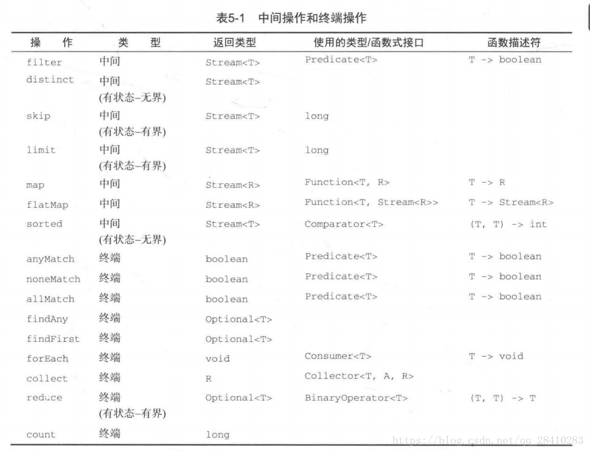

最近在实习，在公司看到前辈的一些代码，发现有很多值得我学习的地方，其中有一部分就是对集合使用Stream流式操作，觉得很优美且方便。所以学习一下Stream流，在这里记录一下。
Stream是Java 8中出现的新特性，极大增强了集合对象的功能，专注于对集合对象进行方便、高效的聚合操作。另外可以配合Lambda表达式，让代码更加容易理解。另外Stream提供串行和并行两种操作方式，并行操作可以很方便的写出高性能的并发程序。
Stream像是一个高级版本的Iterator，使用Iterator只能显式地遍历一个个元素对其执行某些操作；使用Stream，我们只需要指定对集合包含的元素执行什么操作，例如“只获取性别为男的用户”、“获取每个用户姓名的姓氏”等，Stream会帮我们完成隐式的遍历操作，并转换数据。
与Iterator不同的是，Iterator只能串行操作，每次操作完一个元素再去下一个元素。Stream支持串行、并行操作，Stream的并行操作依赖Java 7的Fork/Join框架(JSR166y)来拆分任务和加速处理过程。
Stream就像是一条流水线，单向，不可回头，只能遍历一次，之后就不能再使用了。
使用一个Stream流，一般分为三个步骤：1. 获取数据源-> 2. 中间操作(Intermediate)-> 3. 终端操作(Terminal)。
中间操作：一个流可以有0或多个中间操作，对数据进行转换、过滤等操作，一个接着一个，这些操作是lazy的，中间操作是还没有开始真正的遍历。
终端操作：一个流只能有一个终端操作，使用终端操作之后就会返回结果，不能再使用这个流了。终端操作时，才真正开始遍历。
在Stream中一个流的多次中间操作不是每一次都进行一次遍历的，中间操作是lazy 的，多个中间操作是最终聚合到终端操作的时候进行的，只进行一次遍历循环。可以理解为每个中间操作被当做一个判断条件加入到终端操作循环中，完成每个元素的数据转换。
下面是一些Stream流操作方法的分类：

数组
静态工厂
//数组
String[] array = new String[]{"1","2","3"};
Arrays.stream(array);
Stream.of(array);
Stream.of(1, 2, 3);
//集合
List<String> list = Arrays.asList(array);
list.stream();
list.parallelStream();
//数值,目前只支持IntStream、LongStream、DoubleStream三种
IntStream.of(new int[]{1,2,3}).forEach(System.out::println);
IntStream.range(1,3).forEach(System.out::println);
IntStream.rangeClosed(1, 3).forEach(System.out::println);Stream stream = Stream.of("1","2","3");
//Array
String[] array2=(String[]) stream.toArray(String[]::new);
//Collection
List<String> list1=(List)stream.collect(Collectors.toList());
List<String> list2=(List)stream.collect(Collectors.toCollection(ArrayList::new));
Set set=(Set)stream.collect(Collectors.toSet());
Stack stack=(Stack)stream.collect(Collectors.toCollection(Stack::new));
//String
String str = stream.collect(Collectors.joining()).toString();List<Long> names= users.stream().filter(Objects::nonNull).map(User::getId).collect(Collectors.toList());
//或者
List<Long> names1=
users.stream().filter(Objects::nonNull).map(u->u.getId()).collect(Collectors.toList());
//遍历list
names.forEach(System.out::println); //key:id value:name
Map<Long, String> map = users.stream().collect(Collectors.toMap(p -> p.getId(), p -> p.getName()));
//或者,第三个参数表示如果key重复保留k1,舍弃k2。
Map<Long, String> map2 = users.stream().collect(Collectors.toMap(User::getId,User::getName,(k1,k2)->k1));
//key:id value:user
Map<Long, User> map3 = users.stream().collect(Collectors.toMap(p -> p.getId(), p->p));
//遍历map，包括k,v。map.values.forEach()不能遍历Key
map3.forEach((k,v)-> System.out.println("k:v="+k+":"+v));//降序，默认是升序
List<User> list=
users.stream().sorted(Comparator.comparing(User::getId).reversed()).collect(Collectors.toList());
//遍历list
list.forEach(System.out::println);Comparator.comparing(User::getId)表示以id作为排序的数据。
//按照性别分组
Map<String,List<User>> map=users.stream().collect(Collectors.groupingBy(User::getSex));
map.forEach((k,v)-> System.out.println("k:v="+k+":"+v));List<String> list1 = new ArrayList<>();
list1.add("a");
list1.add("b");
list1.add("c");
List<String> list2 = list1.stream().map(String::toUpperCase).collect(Collectors.toList()); //map
List<String> str = Arrays.asList("a,b,c", "d,e", "f");
List<String[]> list1 = str.stream().map(s -> s.split(",")).collect(Collectors.toList());
list1.forEach(p-> System.out.print(Arrays.toString(p)+","));//[a, b, c],[d, e],[f]
//flatMap
List<String> list2 = str.stream().map(s -> s.split(",")).flatMap(Arrays::stream).sorted(Comparator.comparing(p->p.toString()).reversed()).collect(Collectors.toList());
System.out.println(list2);//[f, e, d, c, b, a]flatMap与map的区别在于 flatMap是将一个流中的每个元素都转成一个个流，flatMap之后得到的是每个流中元素的总的集合，即对每个流进行了二次遍历取出其中的元素，融合到总的集合中。
//求和 sum=11,第一个参数1为初始值（种子）,第二个参数为运算规则（BinaryOperator）。1+1+2+3+4=11
Integer sum = Stream.of(1, 2, 3, 4).reduce(1, Integer::sum);
//concat="ABCD";
String concat = Stream.of("A", "B", "C").reduce("", String::concat);
//求和，reduce方法无初始值,返回类型为Optional，需要调用get()方法取值。
Integer sum2 = Stream.of(1, 2, 3, 4).reduce(Integer::sum).get();
//取最大值,max=2.0。
Double max = Stream.of(1.0, 2.0, -1.0, 1.5).reduce(Double.MIN_VALUE, Double::max);optional也是Java 8中的新特性，可以存储null或者实例，有机会再深入讲吧。
List<Long> ids=users.stream().map(User::getId).limit(5).skip(2).collect(Collectors.toList());
ids.forEach(System.out::println);//0-9 输出了 2 3 4limit(5)限制只要前五条，skip(2)跳过前两条。特别注意如果limit和skip配合sorted使用，需先进行limit和skip。
Map<Long, String> map = new HashMap<>();
map.put(1L, "1号");
map.put(2L, "2号");
map.put(3L, "3号");
List<User> list = Lists.newArrayList();
list.add(new User(1L,10,"1号","",""));
list.add(new User(2L,10,"2号","",""));
list.add(new User(3L,10,"3号","",""));
boolean f = false;
//所有都匹配的时候才会返回true
for(Map.Entry<Long,String> entry:map.entrySet()){
f = list.stream().anyMatch(p ->
Objects.equals(entry.getKey(), p.getId())
);
}
以下，补充于20191211
突然想起来面试的时候有几个关于取两个List的交集、并集问题也可以用Stream来解决。特此记录一下。
List<String> list1 = Lists.newArrayList();
list1.add("1");
list1.add("2");
list1.add("3");
list1.add("4");
List<String> list2 = Lists.newArrayList();
list2.add("3");
list2.add("4");
list2.add("5");
list2.add("6");
//交集,或使用list1.retainAll(list2);
List<String> intersection=list1.stream().filter(i->list2.contains(i)).collect(Collectors.toList());
System.out.println("交集：");
intersection.forEach(System.out::println);
//差集，或使用list1.removeAll(list2);
List<String> reduce=list1.stream().filter(i->!list2.contains(i)).collect(Collectors.toList());
System.out.println("差集：");
reduce.forEach(System.out::println);
//并集
List<String> listAll = list1;
listAll.addAll(list2);
System.out.println("并集：");
listAll.forEach(System.out::println);
//去重并集，或使用list1.removeAll(list2);list1.addAll(list2);
List<String> listAllDistinct = listAll.stream().distinct().collect(Collectors.toList());
System.out.println("去重并集：");
listAllDistinct.forEach(System.out::println);使用Stream和使用ArrayList的removeAll、retainAll方法比较，Stream不会改变原来的List。
生命不息，学习不止。还需继续努力。20191210